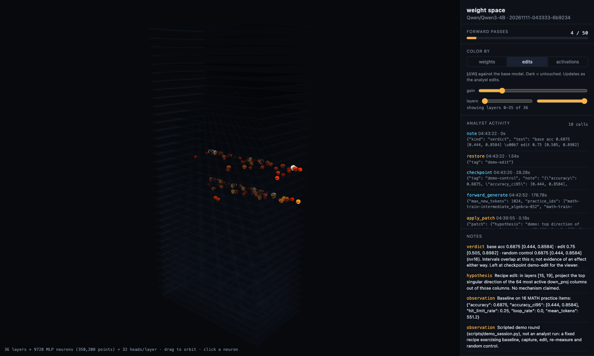
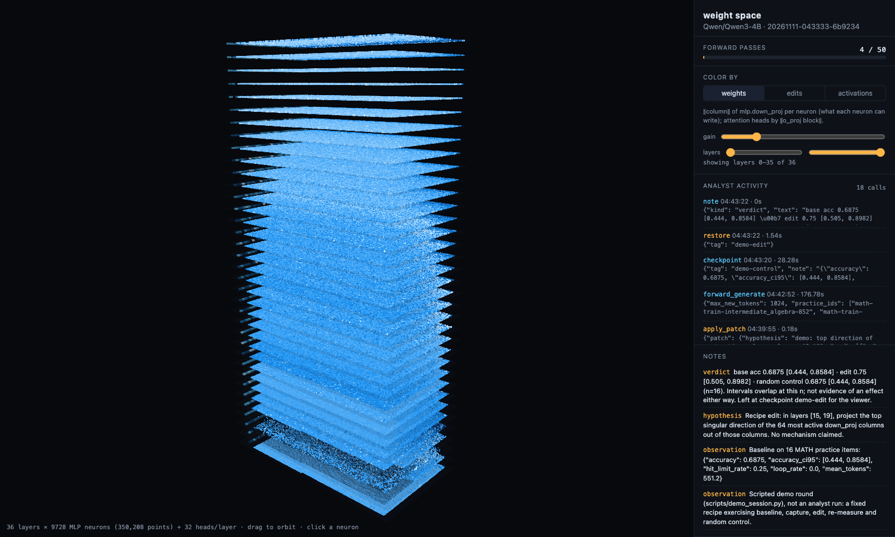
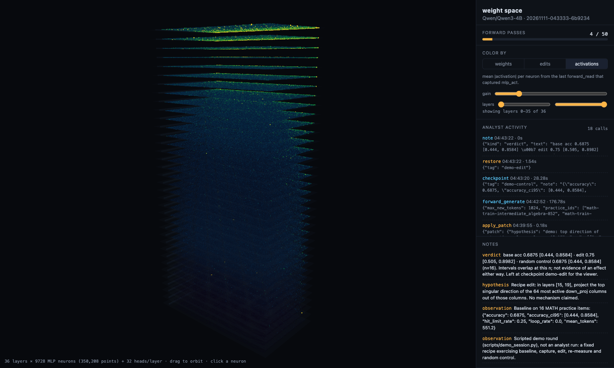
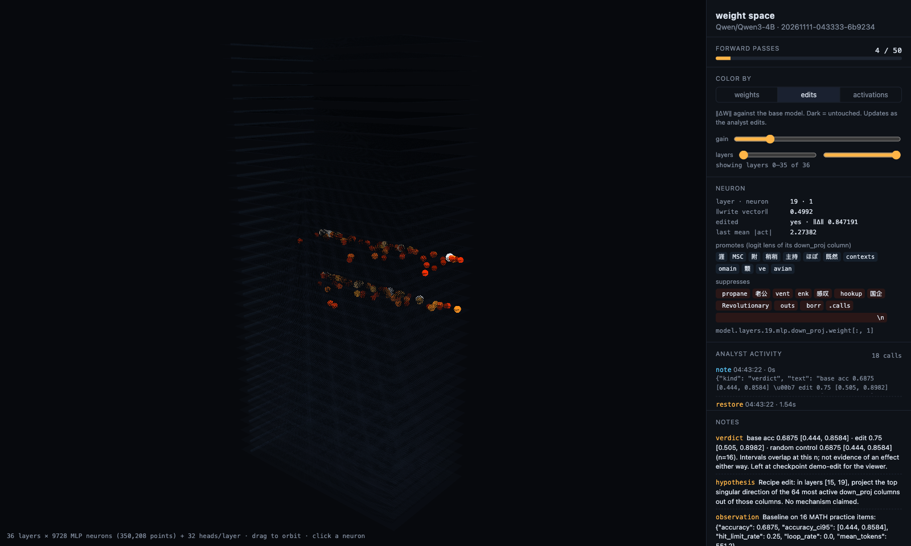

Let a frontier model edit a language model's weights directly.
wsp-harness keeps Qwen3-4B resident in full precision and hands Claude Opus or Fable
the paper's analyst setup: a Python sandbox over the live weights, a metered budget of forward
passes, structured edits with checkpoints and controls, and a held-out evaluation it never sees.
No training. No gradients. Every neuron, edit, and tool call shows up live in 3D.

01What it is
In Sparks of Weight-Space Programming (Takehi, Teoh, Zhang, Khattab, 2026), an analyst model raised Qwen3.5-0.8B's MATH-500 score from 7.9% to 48.1% by editing 0.016% of its weights. It did this with only a notebook over the weights and 50 metered forward passes. This repo rebuilds that harness so the analyst is Claude, the patient is a bigger model, and the operator can watch.
Live weight sandbox
W[name][:, cols] -= … edits the running model in place. A pristine base copy makes every change diffable and reversible.
Metered forward passes
One pass = up to 512 graded generations or 1,024 reads with activation capture, exactly as in the paper. Analysis in the sandbox is free.
Controls built in
control="random" re-applies an edit with a random direction. steer= applies the same direction at inference time, so a weight edit can't hide a plain steering vector.
Analyst over MCP only
Claude runs headless with --tools "": no shell, no files, no web. It gets twelve lab tools. Held-out evaluation and export stay with the operator.
02Seeing inside



03The analyst's tools
| tool | what it does |
|---|---|
lab_info | architecture, tensor families and shapes, limits, capture sites, rules |
python | persistent sandbox: W, acts, last_gen, numpy, torch, logit_lens, top_singular, cos… |
forward_generate 1 pass | answers practice problems; accuracy with Wilson CI, truncation and loop rates; optional steering |
forward_read 1 pass | teacher-forced read; captures residual stream, MLP activations, attention heads into acts |
apply_patch | project_out, add_rank1, col_gain, row_gain, zero_cols; fidelity report; random control |
weight_diff · checkpoint · restore | what changed vs base (elements, columns, edit rank); save and roll back states |
note · budget · practice_problems | hypotheses and verdicts for the operator; passes left; practice items |
04Run it
# install (Python 3.10+, ~10 GB free for Qwen3-4B; Apple Silicon, CUDA or CPU) git clone https://github.com/shivanshtalwar0/wsp-harness && cd wsp-harness pip install -e ".[lab,dev]" # 1. the lab + 3D viewer at http://127.0.0.1:8765/ python -m wsp.lab serve --model Qwen/Qwen3-4B --budget 50 # 2. baseline on the held-out split (MATH-500) python -m wsp.lab eval --n 200 # 3. Claude as the analyst (Opus by default; pass claude-fable-5-2 for Fable) scripts/run_analyst.sh # 4. did it help? then export the edit python -m wsp.lab eval --n 500 --checkpoint final python -m wsp.lab export --full-model
No download handy? --model tiny-qwen3 --device cpu --dtype float32 --practice toy --eval toy runs a 4-layer random model offline.
05The replay's session
The 3D replay is a snapshot of a scripted round
(scripts/demo_session.py), not an analyst run. A fixed recipe exercised every part of the
harness once on real data. In layers 15 and 19 it projected the top singular direction of the 64 most
active down_proj columns out of those columns, then re-measured and ran the random control.
| condition | accuracy (16 MATH practice items) | 95% CI | hit token limit |
|---|---|---|---|
| baseline | 11 / 16 · 68.8% | 44–86% | 25% |
| recipe edit (layers 15, 19) | 12 / 16 · 75.0% | 51–90% | 19% |
| random-direction control | 11 / 16 · 68.8% | 44–86% | 25% |
One problem's difference, with fully overlapping intervals: not evidence of an effect, and the replay's verdict note says so. The edit landed exactly as written (fidelity 0.9998 and 1.0 in bf16, about 300k weights, 0.0075% of the model). Each 16-problem generation pass took about 3 minutes on an M5 Pro. A real round is the analyst's job: diagnose a suppressor first, then edit with a hypothesis, at a sample size where the intervals can separate.
06What it can and can't do
This is not distillation. Claude's knowledge doesn't flow into Qwen's weights; only the edits it reasons its way to do. The paper's own control found that weight edits remove obstacles hiding an ability (loops, truncation, format drift) but do not add an ability the model lacks.
Expect gains where the baseline shows a suppressor, and honest nulls elsewhere. If you want a frontier
model's skill transferred wholesale, that's fine-tuning. Use the lab to find what to train.
The sandbox is a convenience boundary, not a security one: the analyst's Python runs in the lab
process, and the ledger records every call. In bf16, edits under ~0.4% of a weight's magnitude round
away; apply_patch reports the fidelity, and --dtype float32 avoids the rounding.